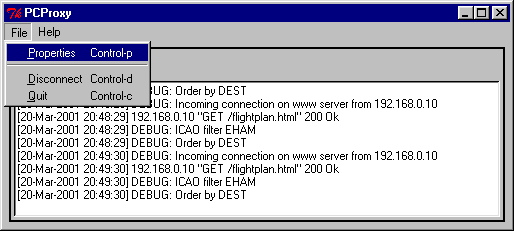
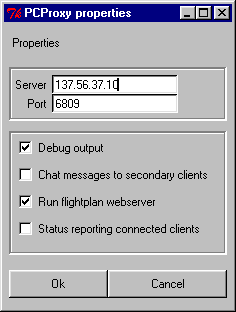

PCProxy User Manual
Version 1.1.0
(C) 2000-2004 by Kees Leune <kees@leune.org>
Table of Contents
1 Version 1
2 License 1
3 Windows distribution 2
3.1 Requirements 2
3.2 Installation instructions 2
4 Debian distribution 2
4.1 Installation instructions 2
5 Source distribution 2
5.1 Requirements 2
5.2 Installation instructions 2
6 About PCProxy 3
6.1 How do I use it? 3
Basic functionality 3
Flightplans 3
Flight plan socket stream 4
6.2 User manual 4
The main window 4
The properties window 5
6.3 How does it work? 6
6.4 How large is it? 6
6.5 Some important remarks 6
This document describes version 1.0.4 of PCProxy
A masquerading proxy for Simulated Air Traffic Networks
Copyright (c) 2000-2004 Kees Leune <kees@leune.org>
This program is free software; you can redistribute it and/or modify it under the terms of the GNU General Public License as published by the Free Software Foundation; either version 2 of the License, or (at your option) any later version.
This program is distributed in the hope that it will be useful, but WITHOUT ANY WARRANTY; without even the implied warranty of MERCHANTABILITY or FITNESS FOR A PARTICULAR PURPOSE. See the GNU General Public License for more details.
You should have received a copy of the GNU General Public License along with this program; if not, write to the Free Software Foundation, Inc., 59 Temple Place, Suite 330, Boston, MA 02111-1307 USA
PCProxy does not depend on any other software. However, for the program to be useful, you will need a radar client such as ProController or ASRC.
Download the .zip file from the download site at http://www.leune.org/pcproxy/.
Unzip the file that you just downloaded.
Copy pcproxy.exe to a directory of your choice.
Download the most recent deb file from the download site at http://www.leune.org/pcproxy/
As root, run dpkg -i <filename you just downloaded>
alternatively,
Check if pcproxy is available yet in the Debian archive by typing
# dselect update (
do this as root )
$
apt-cache search pcproxy
If the program is available, type
#
apt-get install pcproxy ( do this as root )
You need to have Tcl/Tk (version 8.0 or later) installed if you want to run PCProxy from the source distribution.
Download the most recent tar.gz file from the download site at http://www.leune.org/pcproxy/
Unpack the tarball that you just downloaded and cd into the pcproxy directory
Run ./configure && make && sudo make install
PCProxy allows multiple clients to share a single network connect to an flight simulation network, such as Vatsim or IVAO, which is based on the fsd protocol. In tech-terms, it is a multi-connect masquerading proxy for fsd traffic over TCP/IP.
The program sits between the Vatsim or IVAO server and a radar client such as Pro Controller or ASRC. You will have to start pcproxy first, then ProController. Instead of entering the normal server IP address into your radar client's preferences, use the address 127.0.0.1 if you are running the proxy on the same computer as your radar client. If you are running the proxy on a separate machine from your radar client, you will have to use that address.
Then, connect to the server. Keep in mind that the FIRST connection made to the proxy is the one that is relayed to the virtual air traffic control network. As a consequence, your callsign, your scope range, and your location are determined by the first connection!
All subsequent connections to the server are secondary clients, and will only receive position updates of traffic. In addition, they can ping, ask for com frequencies, transmit on a frequency and use private message. All messages will be masqueraded as if they appeared from the primary connection.
Starting version 0.8.2, PCProxy has the first version of a builtin web server that you can use to view the flightplans in a separate window. A list of flightplans in range can be obtained by starting a web browser and pointing it to the computer on which you run PCProxy program.
Note that the flightplan functionality is disabled by default. If you want to use it, please please a check mark in front of the 'run flightplan web server' of the Properties window.
PCProxy's web serve supports a number of options:
dest=ICAO
Filter for destination airports. Multiple airports can be separated with commas.
from=ICAO
Filter for origin airport. Multiple airports can be separated with commas.
icao=ICAO
Filter for origin or destination airport. Multiple airports can be separated with commas.
orderby=from|dest
Order the output by airport of origin, or airport of destination. Without this parameter, thelist is ordered by callsign
refresh=x
Refresh the web page every x seconds. It is advised to use at least 30 seconds for this.
When multiple parameters are combined, all conditions must be fulfilled. To create a valid URL, follow the HTTP standard. Some examples are easiest
http://proxyhost/flightplan.html?refresh=60&icao=eham
This
will load the flightplans of aircraft inbound or outbound to or from
amsterdam schiphol. The web page will refresh every 60 seconds
http://proxyhost/flightplan.html?refresh=30&from=eham&orderby=dest
This
will load the flightplans of aircraft outbound from amsterdam
schiphol, ordered by destination field. The page will refresh every
30 seconds.
http://proxyhost/flightplan.html?refresh=45&icao=ehse,ehgr&orderby=dest
Thiswill load the flightplans of aircraft inbound or
outbound to Seppe airfield or Gilze-Rijen airforce base, ordered by
destination.
From this, it becomes clear that after the filename, a question mark (?) is placed, followed by a number of parameters that are separated by ampersands (& signs).
Starting version 1.0.4, PCProxy is also able to stream flight plans on a TCP Socket. This stream is utterly useless for humans, but can be extremely interesting to software that desires to use PCProxy's functionality. For more information regarding this feature, please inspect the configuration file.

Note that when the debug function is active, lots of output is sent to the log window. The file menu contains three options, which all have shortcuts. Control-p, or selecting the Properties option brings up the window where you can adjust several settings (see below). Disconnect will immediately disconnect all clients and the link with the server, but will keep the program running. Quit also disconnects all clients and the link with the server, but it also stops the program.

The following fields can be updated
Server
The internet address of the satco or ivao server.
Both IP addressess as well as canonical names are accepted
Port
The port number on which the server listens. Usually
6809.
Debug output
Show debug output to the log window. Useful
if you want to know what's going on
Chat messages to secondary clients
By default, private
messages are not sent to the secondary clients. With this option
checked, you will also be able to receive (and send) private
messages on the secondary clients.
Run flightplan webserver
If you enable this option, the
proxy will also behave as web server. The web server's port number
can be changed by editing pcproxy.ini if that is required.
Status reporting connected clients
With this option
enabled, the system will report every 2:30 minutes how many clients
are connected. Useful for debuging, or if you want to know what's
going on.
The proxy is written in Tcl/Tk, which means that it is single-threaded event driven. It roughly works like this:
Open a server socket on port 6809 (not configurable)
Setup the GUI
Wait for incoming connections
The first incoming connection is the primary connection. This connection determines the callsign used on the network, the location of the controller, the range of the scope, etc.
All subsequent connections are secondary connections. These connections will receive all traffic sent to the primary connection. The callsign used in the primary connection will be changed to the callsign of the secondary connection, to it thinks that traffic was meant for it.
All outgoing traffic (ie. From clients to server) on the primary connection will be passed
All outgoing traffic on the secondary connections will be refused, except:
radio telephony
private messages
ping requests
metar requests
info requests (available to supervisors and administrators only)
All incoming traffic will be spread over all connected clients, both primary and secondary. All clients will traffic as if it was sent to their local callsign.
If the server connection is lost, all clients are disconnected
If a secondary connection is lost, it is removed from the queue, but nothing else happens
If the primary connection is lost, all secondary connections and the server connection are disconnected.
That depends on how you look at it. The actual code is roughly 1277 lines, most of which is comment. That boils down to about 50kB of source code. Since Tcl/Tk is an interpreted language, it is larger when it is wrapped into a large executable. When compiling for windows, the executable is about 2 Megabytes is size, zipped it is one file of about 1.25 Megabytes.
If connections are made with ProController and Squawkbox for MS Flightsimulator, the lag indicator in ProController will go up considerably. This is due to the fact to MS Flightsimulator puts a very heavy load on the computer.
It is good practice NOT to use the same callsign on more than one client. Although the proxy could not care less if you do so, ProController will get upset rather quickly. For example, all private messages sent will pop up on all client connections.